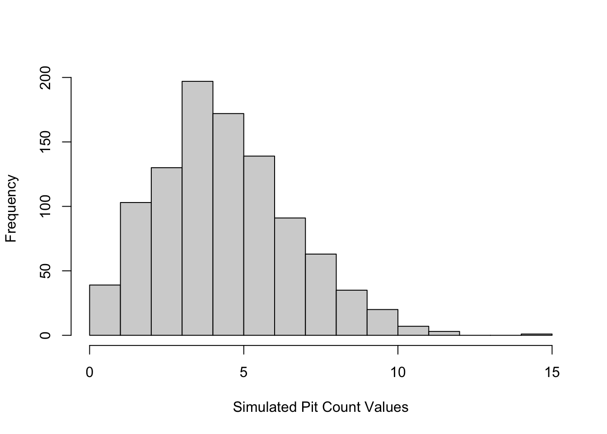
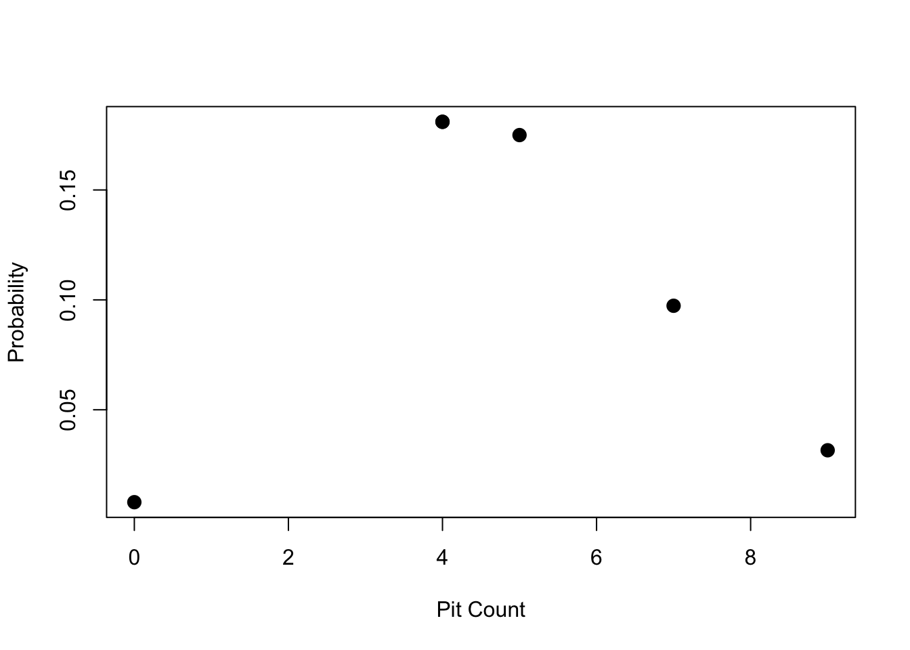

Week 3 Probability Distributions II - Others
This week we review distributions other than the Normal. While the Normal distribution is super useful, sometimes the data we are collecting are not suitable for it. If we are counting rare events for example - the counts will be low and left skewed toward zero likely. A Normal distribution in this case would have some of its tail below zero (which doesn’t make sense for count data), as well, counting variables are discrete random variables - they can only take on values of whole integer numbers (i.e., no half counts!). Luckily, the way we work with discrete distributions in R is very similar to how we work with the Normal distribution. We just have to remember that different distributions have different defining parameters.
3.1 What we cover this week
- The Binomial distribution
- The Poisson distribution
- The discrete and continuous uniform distributions
- Understanding when to use a given distribution
3.2 Readings
Key sections to focus on in the readings:
- Introduction
- Basic Concepts
- Permutations and Combinations
- Binomial Distribution
- Poisson Distribution
3.3 Lab
This lab is due on the Dropbox on MyLearningSpace on Friday February 5th
Our lab this week will examine a specific process of rock weathering in sandstone found in coastal rocky areas in coastal British Columbia. This weathering process produces characteristic ‘honeycomb’ patterns in sandstone which can easily be found in coastal sandstone around the world. These features are called by several names, such as honeycomb weathering, cavernous weathering, and ‘tafoni’. In coastal salt-rich environments such as where we will be exploring, we will investigate how this unique pattern of rock weathering forms and how we can characterize their patterns using probability distributions. But most importantly let’s take a look at what we’re talking about:
Figure 3.1: Honeycomb weathering on the coast of Gabriola Island, British Columbia. Image credit: Colin Robertson
These rock features are pretty cool to see and very distinctive. Here are a few more examples taken from the same site: all photos were taken at approximately the same vertical distance so the scale is approximately equal across these images.
Figure 3.2: More examples of honeycomb weathering on the coast of Gabriola Island, British Columbia. Image credit: Colin Robertson
3.3.1 How does honeycomb patterns in sandstone form?
There are a variety of mechanisms that produce these regular weathering patterns in sandstone, but in salt-rich coastal environments such as that here, the primary process is a result of what is called salt crystallization. In short, rockfaces exposed to sunlight have salt-rich water drawn up to the surface where the salt crystallizes as the water evaporates. The salt crystallization exerts pressure on the surround rock to create tiny factures which become the pits we recognize in the pattern above. As a result of this process, we therefore expect to see these interesting features where sandstone has direct sunlight exposure, such as on south-facing sections of coastline.
We can investigate the density of the weathering process. We will take one image as our study dataset, then count the number of pits in different sections of the image. Unlike in Lab 1 where we sampled trees from a forest, here we are taking one small section of coastline and enumerating the density of weathering pits for the entire small section. This is still a sample - and our population is the sandstone surfaces undergoing this process in general. Think about what potential issues there may be in making inferences from the data to the population in this case.
3.3.2 Study Image
The image below we will use as our dataset.We have placed a regular 6 x 6 grid over the image which will serve as our sampling units. Then we will count the number of pits in each cell and generate a dataset of counts. Since this will be a dataset of counts, we will consider this a discrete random variable.
Figure 3.3: Study image dataset featuring honeycomb weathering on the coast of Gabriola Island, British Columbia. Image credit: Colin Robertson
In order to count the number of pits per cell, we have to make some decisions; namely
- what counts as a pit and
- how do we associate pits with cells since in many cases the hole crosses cell boundaries.
This is the sort of research decision we have to make carefully, and then later consider how it impacts our analysis. We will use the following criteria. A pit will be defined based on having visible walls (i.e., we can discern the edges/sides of the pit) and further, we will link it with a cell based on the centroid of the pit. Since this step requires some interpretation which may vary - I have done this for you digitizing our dataset of pit centroids, as below:
Figure 3.4: Study image with pits digitized. Image credit: Colin Robertson
Your first job is to create a dataset by counting the number of pits in each cell. I have done the first row for you to give us a working dataset as an example, but when you do the assignment you will have to get the counts for all cells - you should end up with a datset with 36 observations, each of which is a count.
Figure 3.5: First row of cells with number of pits counted. Image credit: Colin Robertson
So to get started our dataset would be created in R as follows:
pits <- c(4,7,9,4,5,0)recall why we are treating this as a discrete random variable. Based on our criteria and the nature of the dataset, we have counts - which cannot take on fractional values. This was a decision which impacts how we treat the data. An alternative way to analyze the data would be to measure the fraction of each cell covered by a pit, which we could then treat as a continuous random variable.
3.3.3 Analyzing Count Data
The first thing we can do if we want to estimate the parameters of the Poisson distribution with our dataset, is to calculate the sample statistic estimate of the distributions parameters. In Lab 1 we did this by calculating the sample mean and sample standard deviation. The Poisson distribution has a probability mass function as follows:
\(P(X = k) = \frac{e^{-\lambda}\lambda^k}{k!}\)
and the only important thing for you to know is that there is one unknown quantity required to define it (i.e., one parameter) - which is the mean number of events per unit of observation - which in our case is the cells which we counted pits in. The sample estimate of \(\lambda\) is therefore simply:
mean(pits)## [1] 4.833333so we know that is the average number of pits, but we are not sure what the overall distribution would look like. Again we can simulate some new data using our estimate of \(\lambda\) that we calculated from the data to see
simpits = rpois(n=1000, lambda = mean(pits))
hist(simpits, xlab = "Simulated Pit Count Values", main="")
which again might vary a bit for you, but should be a distribution centered on around 5 and tailing off around 12 or 14. Lets look at this and notice a few details;
- the lowest value is zero
- the higher values quickly trail off
- the distribution shape is almost normal
the Poisson is useful for what we call rare events because of these properties of being bounded by zero on the lower end. If you have count data that has very high counts, the difference between the Poisson and the Normal is negligible and you can just use a Normal distribution (this is called a Normal approximation). Lets look at the Poisson functions.
The function dpois gives the probability of x number of events observed given the expected number specified by \(\lambda\). Whereas the function ppois gives a cumulative probability - similar to what we did in the Normal distribution, where we have to specify the upper or lower tail (i.e., equal or less than vs. equal or greater than). Say we wanted to calculate the probability of observing 7 pits in a cell given our mean number per cell of 4.8333333 - we could of course work through the formula on a calculator or using R math functions - and it would look like this:
#compare this to the probability function noted above
exp(-mean(pits))*mean(pits)^7/factorial(7)## [1] 0.09732103but it is much easier to use the built in function dpois to get the probability:
dpois(x = 7, lambda = mean(pits))## [1] 0.09732103we get the same answer but using dpois is a lot cleaner and easier. We can also plot the probability for each of the observed counts in our dataset. We just have to supply the whole vector of counts to the same dpois function
plot(pits, dpois(x = pits, lambda = mean(pits)), pch=20, cex=2, xlab = "Pit Count", ylab = "Probability")
So now we have the ability to calculate probabilities from the Poisson distribution in R. How do we answer meaningful questions with these tools? While the process of salt crystallization is the dominant one creating the weathering pits, we may want to know how pits form. For example we could ask how many can form before adjacent pit edges dissolve into one larger pit. What do you think the maximum number of pits per unit area is? Where we see large pits form, are these the gradual growth of single pits or the amalgamation of several into one larger one? The other thing to think about is where we have large pits, the count in the cell is likely going to be lower.
3.3.4 Assignment
Calculate the probability of observing a cell with 15 pits based on the sample intensity (\(\lambda\) computed from all cells in the image). Write a sentence interpreting what this means. Include commands used to generate the answer. (out of 2)
What is the probability of observing a cell with between 3 and 5 pits (\(\lambda\) computed from all cells in the image)? Write a sentence interpreting what this means. Include commands used to generate the answer. (out of 3)
There are two important assumptions to using the Poisson distribution we should consider.
- The probability that an event will occur within a given unit must be the same for all units (i.e. the underlying process governing the phenomenon must be invariant)
- The number of events occurring per unit must be independent of the number of events occurring in other units (no interactions/dependencies).
Write short paragraph (200-300 words) explaining why or why not these assumptions are met in this analysis of the weathering pits dataset. (out of 5)
- Explore the assumption of independence by calculating the probability of each observed count and noting where on the image any counts with a probability less than 0.10 occur. Comment on whether these are distributed randomly over the image or clumped in specific parts of the image and what this means for the independence assumption. Include an image showing which cells have an unusual (i.e., p < 0.10) number of pits. (out of 5)
Hint: to answer 4 you can take a screenshot from the lab and use MSPaint (Windows), Photos (Mac) or another graphics program to identify which cells have unusual counts.